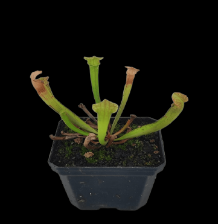
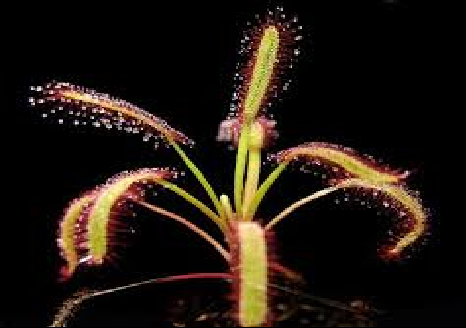
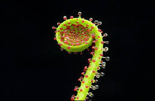
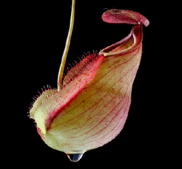
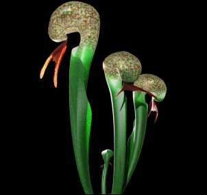
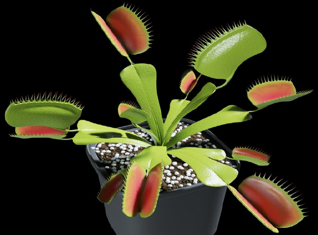

Descripcion de las plantas carnivoras |
|---|
Las plantas carnívoras son especies vegetales que atraen, atrapan y digieren insectos u otros pequeños organismos para obtener nutrientes esenciales, principalmente nitrógeno, que les faltan en suelos pobres. Aunque realizan fotosíntesis para obtener energía, han evolucionado mediante hojas modificadas como trampas para sobrevivir en entornos hostiles. Las plantas carnívoras son vegetales fascinantes que han evolucionado para sobrevivir en suelos pobres en nutrientes (como pantanos) capturando y digiriendo insectos u otros pequeños invertebrados mediante trampas especializadas. Aunque realizan la fotosíntesis, utilizan el nitrógeno de sus presas para desarrollarse mejor. Existen más de 600 esecies con diversos mecanismos de caza. |

Serracenia
La Sarracenia es un género de plantas carnívoras perennes, nativas de Norteamérica, conocidas como "plantas jarra" por sus hojas tubulares en forma de embudo que atrapan insectos. Son ideales para principiantes, requieren mucha luz solar directa, sustratos pobres en nutrientes y mantener el sustrato encharcado (agua destilada).

Drosera
La Drosera, conocida como "rocío del sol", es un género de plantas carnívoras con más de 190 especies. Utilizan hojas cubiertas de tentáculos pegajosos que secretan un mucílago brillante para atraer, atrapar y digerir pequeños insectos, complementando su nutrición en suelos pobres. Son famosas por su belleza exótica y eficacia como control natural de plagas.

Drosophyllum
La Drosophyllum lusitanicum, conocida como pino rocío o rocío del sol, es una planta carnívora única, nativa de zonas secas y arenosas del suroeste de España, Portugal y norte de Marruecos. A diferencia de otras carnívoras, prefiere climas secos, suelos pobres en nutrientes y florece tras incendios (postfueguícola). Es famosa por su aroma a miel, sus hojas pegajosas y sus flores amarillas.

Nepenthes
La Nepenthes, conocida como planta jarra o copas de mono, es una planta carnívora trepadora tropical famosa por sus trampas pasivas en forma de jarrón. Originaria del Sudeste Asiático, utiliza néctar para atraer insectos, que caen en un fluido digestivo interior, proporcionándole nutrientes en suelos pobres. Requiere alta humedad, luz indirecta y sustrato húmedo.

Darlingtonia
La Darlingtonia californica, conocida como "lirio cobra", es una planta carnívora única, nativa del norte de California y Oregón, que se caracteriza por sus hojas tubulares en forma de serpiente cobra con una "capucha" y una "lengua" bífida. Utiliza un sistema de trampas pasivas con "ventanas" translúcidas para desorientar a los insectos.

Venus atrapamoscas
La Venus atrapamoscas (Dionaea muscipula) es una planta carnívora famosa por sus hojas modificadas en forma de "boca" con dientes, que se cierran rápidamente para atrapar insectos y arácnidos, obteniendo nutrientes de ellos en suelos pobres. Nativa de zonas pantanosas en las Carolinas (EE.UU.).